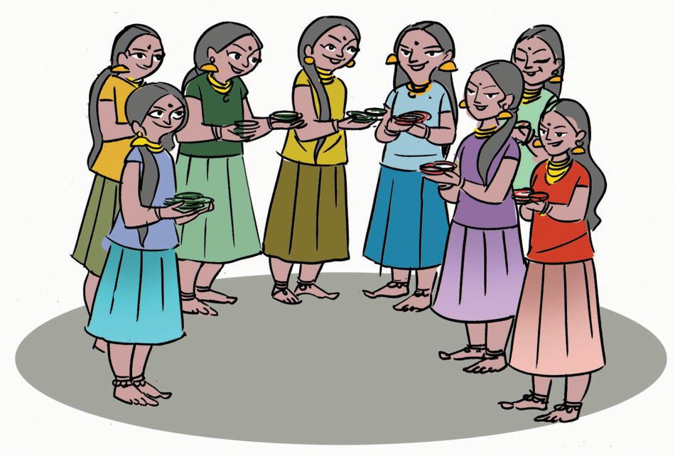
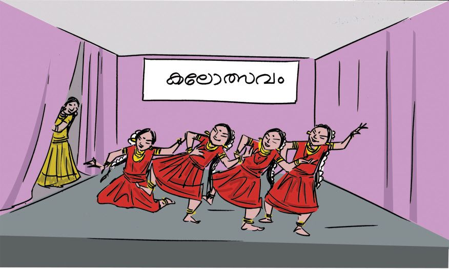

`
Business During Onam holidays, Raju, Abu and John built a shack and started a shop.
Now we have 18 rupees
Lets share it equally
How much does each get? Divide the amount equally for 3. 103


`
Business During Onam holidays, Raju, Abu and John built a shack and started a shop.
Now we have 18 rupees
Lets share it equally
How much does each get? Divide the amount equally for 3. 103


If each takes one rupee first, what remains is
18 − 3 = 15
Again, if each takes one rupees, what remains is
15 − 3 = 12
Once again, if each takes one rupee, what remains is
12 − 3 =
9
Continuing like this
9 − 3 =
6
6 − 3 =
3
3 − 3 =
0
What each gets
How many times did each take one rupee? So, each got
rupees
Lets explain this.
Rupees
18
15
12
9
6
3
18 − 3 = 15
15 − 3 = 12
12 − 3 = 9
9−3= 6
6−3= 3
3−3= 0
Name Raju Abu Johny What remains
When 18 rupees is shared equal among 3, each gets rupees That is, 18 ÷ 3 =
104
How we do
6 3 18 18 0
3 sixes make 18, right?


On the second day, they had 21 rupees left. If this is shared equally, how much would each get? How many times can we take away 3 from 21? If this is continued, how much would each get?
21 − 3 = 18 18 − 3 = 15 ......................... ......................... .........................
We can write this as 21 ÷ 3 = 7 3 21 21 0
How we write
On the third day, they had 27 rupees left. If this is shared equally, each gets. ÷
Art festival
= 3 27
Raju, Abu and Johny were back in school after the Onam holidays.
Nandapuram LP School Notice The school Arts Festival during the last week of November. Students in each class may be divided into four houses, Ragam, Talam, Layam, Shruti for the competitions, Nandapuram
Headmaster
105


Have you seen the notice about the art festival? The table gives the number of children in each class. They must be equally divided among the four houses. How many from each class is to be included in each house?
Class
Number of Children
I
24
II
32
III
36
IV
28
How do we divide the 24 children in class I into 4 houses? First choose 4 of them and put one in each house. How many are left? Next choose 4 from the remaining and put in each house. Now, how many are now left? We can continue this Finally how many children will be there in ÿ each house?
12 - 4 =
8
8-4 = 4-4 =
4 0
24 ÷ 4 = How we do
$
6 4 24 24 0
4 sixes make 24, right? 4 × 6 = 24
Lets divide the 32 children of class II into the four houses like this. The number of children is each house is 32 ÷ 4 = 4 32
$
Number of class III children in each house.
÷
=
÷
=
4 36
$
Number of Class IV children in each house. 4 28
106



Bangle Problem 48 is 8 multiplied by 6 right?
For thiruvathirakkali, 8 girls bought bangles for 48 rupees. They decided to share the cost equally. How much should each give?
48 ÷
=
Group Dance Suhara and friends bought bangles for group dance. 4 packets of 10 each and 8 more. These are to be shared equally among 4 girls. How many bangles for each?
$
How do we find it?
$
First each can be given one full packet. How many bangles does each get?
$
Next divide the remaining 8 bangles among the 4.
Art Festival
What is the connection? 100 × 15 = 1500. 50 × 15 = ..........
50 × 30 = ..........
25 × 15 = ..........
25 × 30 = ..........
75 × 15 = ..........
75 × 30 = ..........
Each gets So total number of bangles each gets is ............. + ............. = ........
107

Here, when we divide 48 bangles equally among 4 children, each child gets 48 ÷ 4 = 12
4 48
=
10 + 2 4 40 + 8 40
How we do 4
=
12 48 40 8
0+8
8
8
0
0
Suppose there are 5 packets of 10 bangles each. How do we divide it equally among 4 children? First lets give one packet to each. Then the number of bangles each gets is Now one packet of 10 bangles and 2 more are left. So, the total number of bangles left is
.
If this is divided equally among 4, each gets is So the total number of bangles each gets is
Lets write these as below.
.
.............
+ ............. = ........
Packet
Single
Number of children is 4 Each of 4 takes 1 packet 4 × 1 =
5 4
2
Remaining →
1
2
To bangles in a packet and 2 more
12
of 10
This is divided equally among 4. Remaining →
108
12 0


10 + 3 4 40 + 12
13 4 52
40
4
0 + 12
How we do
12
12
12
0
0 Doubles
If 72 gooseberries are divided equally among 6, how many does each one get?
24 ÷ 3 = 8
24 ÷ 6 =
75 litres of milk are to be filled in 5 litre bottles. How many bottles are needed?
48 ÷ 3 =
12 ÷ 6 =
48 ÷ 6 =
12 ÷ 12 =
Chalk Making Children of class 4 made 484 chalks during the Work Experience Fair. 4 packets of 100, 8 packets of 10 and 4 more. These are divided equally among four classes. How many chalks does each class get? How do we divide?
$
First lets divide the packets of 100 Number of packets each class gets is
1
Now the packets of 10
JT 523-3/Maths 4(E)Vol-2
Number of packets each class gets is
$
There are 4 more chalks. How about dividing them also? Number of chalks each class gets
2
Find without dividing 72 ÷ 4 = 18 76 ÷ 4 = 68 ÷ 4 = 64 ÷ 4 = 80 ÷ 4 =
109

Thus each class gets;
1 packet of 100. 2 packets of 10. 1 more
That is, 100 + 20 + 1 = We can write it like this: Number of packets of 100
Number of packets of 10
Singles
Total
4
8
4
484
1
2
1
121
Divided among 4 classes, each class gets.
100 4 400 400 0
+ + + +
20 + 1 80 + 4 80 80 0 + 4 4 0
121 4 484 400 84 80 4 4 0
How we do
121 4 484 4 08 8 04 4 0
Here, 484 is called the dividend, 4 is called the divisor and 121 is called the quotient. Rija and four friends bought beads to make necklaces. Beads are sold in packets of 100 or 10. They bought 6 of each. How is it divided among the 5? If the 6 packets of 100 are shared equally, the number of packets one girl gets is Remaining packets of 100 is
110
v


This packet of 100 can be split into 10 packets of 10 each. Now the total number of packets of 10 is 10 + 6 = If 16 packets are shared among 5, Each gets
packets
Remaining packets of 10 is If the beads in the remaining packet of 10 are shared among 5, number of beads each gets is. So each gets one packet of 100, 8 packets of 10 and 2 more beads, right? That is 100 + 30 + 2 = 660 ÷ 5 = 132
100 + 30 + 2 5
5 600 + 60 500 100 + 60 = 160 150
132 5 660 5
660 500 160 150
10 10 0
How we do
16 15
10 10
10 10
0
0
An LP School uses 6 kilograms of mung for lunch. 135 kilograms of mung were bought. For how many days will it last?
$
Here we must divide 135 by 6. 22
Try it? If is enough for 22 days.. How much will be left after that? Kilograms.
6
135 12
What remains after division is, called remainder.
15 12 3
111


How do we split 624 into 6 equal parts? 624 = 600 + 20 + 4 If 600 is divided into 6 equal parts, how much will be there in each part? That is 600 ÷ 6 = 100 How much 10 left? 24 24 divided into 6 is 24 ÷ 6 = 4 Multiplying So, 624 ÷ 6 = (600 ÷ 6) + (24 ÷ 6) = 104 the quotient by the 104 divisor and adding the 100 + 4 remainder gives the 624 6 6 600 + 24 dividend. 6 How we do 600 24 24 24 24 0 0 480 is to be divided by 4. For that, we need to divide 400 by 4 and 80 by 4 and add 100 + 20 4 400 + 80 400 0 + 80 80 0
400 divided by 4 is 80 divided by 4 is
480 divided by 4 is + = 120 4 480 How we do 4 08 8 00 On the other hand 56 ÷ 7 = 8 8 × 7 = 56 45 ÷ 6 gives quotient 7 and 72 ÷ 8 = ..... ................. remainder 3. ................. ................. This we can write, (7 × 6) + 3 = 45 36 ÷ 5 gives quotient 7 and remainder 1 (16 × 7) + 4 = 116 How do we say this in reverse? What is the remainder on dividing 116 7 × 5 = 35 by 7 ? Adding the remainder 1, gives 36 That is (7 × 5) + 1 = 36
112


Digit Sum Theres an easy way to find the remainder on dividing a number by 9. Complete the table. On dividing by 9 Number
Quotient
Remainder
Digit sum
34 42
3 4
7 6
3+4 = 7 4+2 = 6
128
14
2
1 + 2 + 8 = 11 1+1 = 2
57 245 184
What I found out
What is the smallest three digit number giving no remainder on dividing by 3? The milk society got 282 litres of Milk one day. To fill it in 5 litre cans, how many cans are needed? How more litres of milk are needed to fill one more can?
What do you see? 7×1=7 10 × 1 = 10 240 × 1 = 240
7÷1 7÷7 10 ÷ 1 10 ÷ 10 240 ÷ 1 240 ÷ 240
= 7 = 1 = 10 = 1 = 240 =
Do some more divisions like this. What do you get on dividing a number by itself And on dividing by one?
113

Which are the numbers between 10 and 20 which dont leave a remainder on dividing by 6? Ramu has some sweets. When these were divided among 6 children, 5 were left. How many more does he need to share without any left over? If 12 lemons are shared equally by 2 children, how many would each get? What if shared by 4 ? 12 ÷ 2 = 12 ÷ 4 = What is the relation between the shares of 2 and shares of 4 ?
Saying without doing Simi divided a number by 2 and got 100 as answer. What would be the quotient on division by 4? A number divided by 3 gives quotient 10 and remainder 2. What is the number? What is the remainder on dividing 91 by 10? Brain work 2×5 ×
LetsComplete
Lets do
In
50
×
=
4
114
=
240 750
2×
×5
=
25 ×
×4
= 2000
100 ÷ 4
=
200 ÷ 4
=
400 ÷ 4
=
19 × 50 ×
= 1900
800 ÷ 4
=
20 × 50 ×
= 5000
1600 ÷ 4
=
200
,
groups of
200 ÷ 4
can be subtracted
50
In
times from
,
50
200
4 is.

Special numbers
$
Among the numbers from 1 to 100, which ones have zero at ones place? Divide them by 2, 5 and 10.
$
Divide the numbers 45, 53, 61, 65, 70 by 5 and note the remainders. What is the speciality of numbers leaving no remainder on dividing by 5?
What is left? Find the remainders on dividing the numbers below by 4 17, 26, 43, 24, 30, 47
$
Any thing special about the remainders?
What are the possible remainders on dividing a number by 6?
Divisor and remainder Complete the table by writing one example each. Remainder Remainder Remainder Remainder Remainder 5
Division by 3 Division by 4 Division by 5
4
3
2
1
1234567890123456789012345678901212345678901234567890 1234567890123456789012345678901212345678901234567890 1234567890123456789012345678901212345678901234567890 1234567890123456789012345678901212345678901234567890 1234567890123456789012345678901212345678901234567890 1234567890123456789012345678901212345678901234567890 1234567890123456789012345678901212345678901234567890 1234567890123456789012345678901212345678901234567890 1234567890123456789012345678901212345678901234567890 1234567890123456789012345678901212345678901234567890 1234567890123456789012345678901212345678901234567890 1234567890123456789012345678901212345678901234567890 1234567890123456789012345678901212345678901234567890 1234567890123456789012345678901212345678901234567890 1234567890123456789012345678901212345678901234567890 1234567890123456789012345678901212345678901234567890 1234567890123456789012345678901212345678901234567890 1234567890123456789012345678901212345678901234567890 1234567890123456789012345678901212345678901234567890 1234567890123456789012345678901212345678901234567890
Division by 6 56 new books are divided equally among 7 class libraries. How many does each get?
115

A number multiplied by 9 gives 216. What would we get, if the number is divided by 6 instead? If the number got on multiplication by 9 is divided by 6, what would be the quotient? Ramu bought 5 kilograms of sugar and 5 kilograms of jaggery for 400 rupees. One kilogram of jaggery costs 12 rupees more than one kilogram of sugar. What is the price of each per kilogram? Divide 421 by each of 2, 3, 4, 5, 6, 7. What is the peculiarity of the remainders? What about dividing 419 by these numbers? and 420?
Fill the bill Johnys vegetable bill is shown below. Price per Kilogram
Amount bought
Price
Cucumber
9
144
Amaranth
5
90
Tomato
8
64
Bitter gourd
6
150
Banana
8
320
Moringa
4
160
Onion
8
128
Snake gourd
3
75
Bean
7
105
Item
Total
Calculate the price per kilogram of each and write in the table.
116


On myself
Yes
No
Understood what is to be done Found out the calculation needed to get the answer Could find the correct answer through right methods Could convince others that the answer is correct.
528 kids stand in 8 lines. How many are in each line? What if they stand in 6 lines? 126 children are doing an exam in 7 rooms. The number of children is the same in each room. How many in each room? The school store buys pens from a wholesaler, He has pens of 6 rupees, 7 rupees, 8 rupees and 9 rupees. 72 pens of 7 rupees are bought. What is the total cost? If pens of 8 rupees are bought for the same amount, how many would be got? How many, if pens of 9 rupees are bought? If pens of 6 rupees are bought, how many more pens would get than those of 9 rupees? Raju had 140 gooseberries and he sold them at 8 rupees for 5. How much money did he get? Hamsa bought pens for 505 rupees at 5 rupees a piece and sold them at 7 rupees a piece, bought notebooks for 492 rupees at 6 rupees a piece and sold them at 8 rupees a piece; bought pencil boxes for 560 rupees at 8 rupees a piece and sold them at 10 rupees a piece. How much more money did he get? A number divided by 4 gives 22 as quotient. What would be the quotient if the number is divided by 2? what would be , if divided by 8 ?
117

Find the correct ones among those given below. Correct the wrong ones. 123 66 1 3 369 4 264 4 400 3 24 4 06 24 0 6 24 09 9 0 11 5 79 410 4 404 7 353 6 474 5 250 4 35 42 20 03 4 54 50 4 54 50 0 0 0
At a glance Teacher asked whether 240 could be completely divided by 2,3, 4, 5 Gautam immediately said yes. Is he right?
28 3 624 6 24 24 0 814 4 377 32 5 4 17 16 1
Fill in the blanks 2×
× 3 = 1212
2×4×
How could Gautam decide without dividing?
= 1840
5×
× 2 = 1600 × 2 × 3 = 756
Remainder with brain work
What are the remainders got, on dividing the numbers 271, 371, 471, 571, 671, 771, 871, 971 by 9? How did you find out?
So easy ! 396 ÷ 4 =
118
?
711 ÷ 9 =
?
693 ÷ 7 =
?
396 + 4 = 400
711 + 9 = 720
693 + 7 = 700
400 ÷ 4 = 100
720 ÷ 9 = 80
700 ÷ 7 = 100
100 − 1 =
99
80 − 1 = 79
100 − 1 = 99
396 ÷ 4 =
99
711 ÷ 9 = 79
693 ÷ 7 = 99